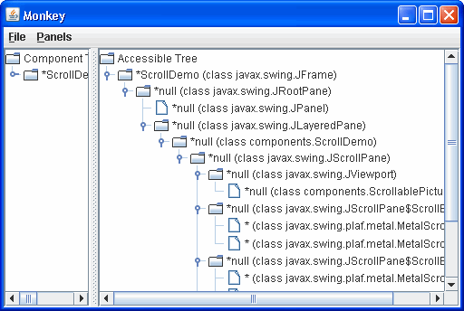
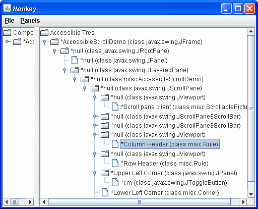
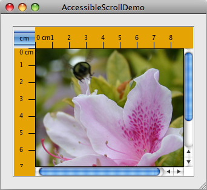
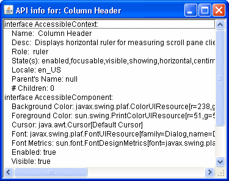
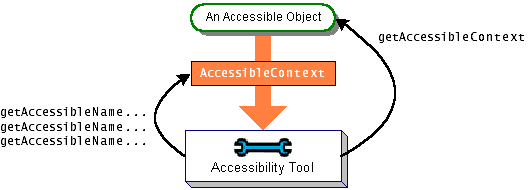

Lección: Usando Otras Características de Swing
Cómo Soportar Tecnologías de Asistencia
Es posible que se pregunte qué son exactamente las tecnologías de asistencia, y porqué debería preocuparse. Principalmente, existen tecnologías de asistencia para permitir que las personas con discapacidades permanentes o temporales usen la computadora. Por ejemplo, si tiene el síndrome del tunel carpiano, puede usar las tecnologías de asistencia para realizar sus trabajo sin usar sus manos.
Las tecnologías de asistencia ─ interfaces de voz, lectores de pantalla, dispositivos de entrada
alternativos, y así ─ son útiles no sólo para personas con discapacidades, sino también para
personas que usan las computadoras en entornos distintos a la oficina. Por ejemplo, si está atrapado en un
atasco de tráfico, podría usar las tecnologías de asisntecia para comprobar sus correo, usar sólo la voz para la
entrda y salida. La información que habilita las tecnologías de asistencia pueden ser usadas para otras
herramientas, también, tales como comprobadores automatizados de IGU y dispositivos de entrada tales como
pantallas táctles. Las tecnologías de asistencia obtienen información de los componentes usando la IPA
Accesibilidad, la cual está definida en el paquete
javax.accessibility.
Ya que el soporte para la IPA de Accesibilidad está construido dentro de los componentes Swing, su programa Swing probablemnte trabaje bien con las tecnologías de asistencia, incluso si no hace nada especial. Por ejemplo, las tecnologías de asistencia pueden automáticmanete obtener la información del texto que es establecido por las siguientes líneas de código:
JButton button = new JButton("¡Soy un botón de Swing!");
label = new JLabel(labelPrefix + "0 ");
label.setText(labelPrefix + numClicks);
JFrame frame = new JFrame("SwingApplication");
Las tecnologías de asistencia pueden tambien tomar el texto tool-tip (si lo hay) asociado con un componente y usarlo para describir el componente al usuario.
Hacer que su programa funcione sin problemas con tecnologías de asistencia es fácil de hacer y, en los Estados Unidos, puede ser requerido por la ley federal.
El resto de esta sección cubre estos temas:
- Reglas para Soportar la Accesibilidad
- Pruebas de Accesibilidad
- Establecer Nombres y Descripciones Accesibles en Componentes
- Conceptos: Cómo Funciona la Accesibilidad
- Hacer los Componentes Personalizados Accesibles
- La IPA de Accesibilidad
- Ejemplos que Usan la IPA de Accesibilidad
Reglas para Soportar la Accesibilidad
Aquí hay algunas cosas que puede hacer para que su programa funcione lo mejor posible con las tecnologías de asistencia:
-
Si un componente no muestra una cadena corta (la cual sirve como su nombre por defecto), especifique un
nombre con el método
setAccessibleName. Es posible que desee hacer esto para botones de solo imagen, paneles que proporcionan agrupaciones lógicas, áreas de texto, etc.. -
Establezca el texto de
tool tip para los componentes
siempre que tenga sentido hacerlo. Por ejemplo:
aJComponent.setToolTipText( "Pulsando este componente causa que XYZ ocurra."); -
Si no quiere suministrar una tool tipo para un componente, use el método
setAccessibleDescriptionpara ofrecer una descripción que las tecnologías de asistencia pueda dar al usuario. Por ejemplo:aJComponent.getAccessibleContext(). setAccessibleDescription( "Pulsando este componente causa que XYZ ocurra."); -
Especifique opciones de teclado siempre que sea posible. Asegúrese que puede usar su programa sólo con el
teclado. ¡Intente ocultar su ratoón! Note que si el foco está en un componente de texto editable, puede
usar Mayúsculas-Tab para mover el foco al componente siguiente.
El soporte para las opciones del teclado varía por componente. Los Botones soportan opciones de teclado con el método
setMnemonic. Los menús heredan el soporte del mnemotécnico del botón y también soportan aceleradores, como se describe en Habilitación del Funcionamiento del Teclado. Otros componentes pueden usar atajos de teclado para asociar el tipeo del usuario con las acciones del programa. -
Asigne una descripción textula a todos los objetos
ImageIconen su programa. Puede establecer esta propiedad o usando el métodosetDescriptiono una de las formasStringde los constructoresImageIcon. -
Si un grupo de componentes forma un grupo lógico, intente colocarlo dentro de un contenedor. Por ejemplo,
use un
JPanelpara contener todos los botones de radio en un grupo de botones de radio. -
Cuando tenga una
etiqueta que describe otro
componente, use el método
setLabelForpara que las tecnologías de asisntecia puedan encontrar el componente al que la etiqueta está asociada. Esto es especialmente importante cuando la etiqueta muestra una mnemotécnico para otro componente (tal como un campo de texto). -
Si crea un componente personalizado, asegúrese de que soporta la accesibilidad. En particular, tenga en
cuenta que las subclases de
JComponentno son automáticamente accesibles. Los componentes personalizados que son descendientes de otros componentes Swing deberán sobreescribir la información de accesibilidad heredada según sea necesario. Para más información, vea Conceptos: Cómo Funciona la Accesibilidad y Hacer los Componentes Personalizados Accesibles. -
Use los ejemplos suministrados con las utilidades de accesibilidad para comprobar su programa. Aunque el
propósito primario de estos ejemplos es mostrar a los programadores cómo usar la IPA de Accesibilidad
cuando se implementan tecnologías de accesibilidad, estos ejemplos son también bastante útiles para
comprobar los programas de aplicación para la accesibilidad.
Pruebas de Accesibilidad muestra
ScrollDemoejecutándose con Monkey, uno de los ejemplos de utilidades de accesibilidad. Monkey muestra el árbolo de componentes accesibles en un programa y le permite interactuar con estos componentes. -
Finalmente, ¡no rompa lo que obtiene de forma gratuita! Si su IGU tiene un contenedor no accesible —
por ejemplo, su propia subclase de
ContaineroJComponento cualquier otro contenedor que no implemente el interfazAccessible— cualquier componente que esté dentro de ese contenedor se volverá inaccesible.
Pruebas de Accesibilidad
Los ejemplos que vienen con las utilidades de accesibilidad pueden darle una ide de cómo de accesible es su programa. Para más instrucciones de como obtener estas utilidades, vea la Pagína de inicio de la Accesibilidad en Java SE Desktop. Siga las instrucciones en la documentación de utildades de accesibilidad para configurar la Máquina Virtual de Java (MV) par ejecutar una o más de las utilidades automáticamente.
Usemos una herramienta de accesibilidad para comparar la versión original de una de nuestras demos con una
versión en la cual las reglas para soportar la accesibilidad han sido aplicadas. Aquí tiene una foto de un
programa llamado ScrollDemo.

Pruebe esto:
-
Pulse el botón Lanzar para ejecutar
ScrollDemousando Java™ Web Start ( descargue KDJ 7 o posterior). O, para compilar y ejecutar el ejemplo usted mismo, consulte el índice de ejemplos.
-
A continuación, pulse el botón Lanzar para ejecutar
AccessibleScrollDemousando Java™ Web Start ( descargue KDJ 7 o posterior). O, para compilar y ejecutar el ejemplo usted mismo, consulte el índice de ejemplos.
-
Compare las dos versiones lado a lado. La única diferencia noticiable son los cm del botón de activación y que la fotografía tiene tool tips en la versión accesible.
-
Ahora ejecute las dos versiones bajo la utilidad de accesibilidad llamada Monkey. Note que cuando las herramientas de accesibilidad han sido descargadas y configuradas en el fichero
accessibility.properties, la ventana de Monkey aparece automáticamente cuando pulsa en los enlaces Ejecutar ScrollDemo y AccessibleScrollDemo (en los pasos 1 y 2).Si la ventana Monkey no aparece en el inicio, el problema puede ser que el fichero
accessibility.propertiesno está presente en la versión de la MV que está siendo usada por Java Web Start. Puede cambiar la MV que usa para ejecutar Java Web Start Gestor de Aplicación y seleccionar Fichero > Preferencias > Java. -
Note que cuando la ventana Monkey aparece usted necesita seleccionar Fichero > Refrescar Árboles para ver la información aparecer bajo
Árbol Accesible. Puede entonces expandir el árbol pulsando sucesivamente en los iconos horizontales visualizados por cada icono de carpeta. Cuando el árbol haya sido expandido, podrá ver información detallada para los diversos componentes. Los componentes personalizados (reglas y esquinas) que no fueron accesibles en la versión original son accesibles en la versión modificada. Esto puede ser una gran diferencia para las tecnologías de asistencia.
Aquí tiene una captura de Monkey ejecutándose en ScrollDemo:

La parte izquierda del panel dividido muestra la jerarquía actual de componentes del programa. La parte derecha muestra los componentes accesibles en la jerarquía, los cuales son los que nos interesan.
La primera cosa a notar es que, incluso sin soporte explícito en ScrollDemo, Monkey es capaz de
descubir un montón de información sobre los diversos componentes en el programa. La mayoría de los componentes
y sus hijos aparecen en el árbol. Sin embargo, los nombres para la mayoría de los componentes están vacíos
(null), lo cual es bastante inútil. Las descripciones también están vacías.
Más problemas tenemos con los componentes personalizados del programa. Las dos reglas son inaccesibles, de forma que no están incluídas en el árbol accesible. Las ventanas gráficas que contienen las reglas se muestran como nodos hoja porque no tienen hijos accesibles. Las esquinas personalizada están también ausentes del árbol accesible.
Ahora tiene aquí una foto de la ventana Monkey para AccessibleScrollDemo:

Las reglas están ahora listadas como hijas de las ventanas gráficas, y las esquinas están listadas como hijas
del panel de desplazamiento. Además, muchos de los componentes ahora tienen nombres no nulos.
En la captura previa de Monkey, el elemento de la Cabecera Columna estaba seleccionado. Monkey resalta el
componente correspondiente en el programa ScrollDemo.

Cuando un elemento se selecciona, puede usar el menú de Paneles de Monkey para sacar a relucir uno de los
cuatro diferentes paneles que le permiten interactuar con el componente seleccionado. Eligiendo
Paneles > panel de la IPA de Accesibilidad muestra un panel como el mostrado en la
siguiente figura. Esta panel muestra la información disponible a través de los métodos definidos en la clase
base AccessibleContext y el interfaz AccessibleComponent.

Monkey tiene otros tres paneles:
-
AccessibleAction: Muesttra las acciones soportadas por un componente accesible y le
oermite invocar la acción. Funciona solo con un componente accesible cuyo contexto implemente el interfaz
AccessibleAction. -
AccessibleSelection: Muestra la selección actual de un componente accesible y le permite
manipular la selección. Funciona sólo con componentes accesibles cuyos contextos implementen el interfaz
AccessibleSelection. -
AccessibleHypertext: Muestra cualesquiera hipervínculos contenidos dentro de un componente
accesible y le permite atravesarlos. Funciona sólo con componentes accesibles cuyos contextos implementen
el interfaz
AccessibleHypertext.
Los ejemplos de utilidades de accesibilidad son útiles como herramientas de prueba y pueden darle una idea de cuán accesibles son los components de su programa. Sin embargo, incluso si sus componentes se comportan bien en Monkey o en los otros ejemplos, aún podrían no ser completamente accesibles porque Monkey y los otros ejemplos sólo ejercen ciertas partes de la IPA de Accesibilidad.
El test de accesibilidad único y verdadero es ejecutar sus programas con tecnologías de asistencia del mundo real, sin embargo, puede encontrar el lector de pantalla siguiente gratis y de fuente abierta útil: NonVisual Desktop Access (NVDA).
Establecer Nombres y Descripciones Accesibles en Componentes
Dar a sus componentes del programa nombres accesibles y descripcviones es uno de los pasos más fáciles e
importantes para hacer su programa accesible. Lo siguietne es un listado completo del constructor
AccessibleScrollDemo que crea el panel de desplazamiento y los componentes personalizados que usa.
Las sentencias en negrita dan a los componentes nombres y descripciones que las tecnologías de asistencia
pueden usar.
public AccessibleScrollDemo() {
// Obtiene la imagen a usar.
ImageIcon bee = createImageIcon("images/flyingBee.jpg",
"Fotografia de una abeja volando.");
// Crea las cabeceras de fila y columna.
columnView = new Rule(Rule.HORIZONTAL, true);
if (bee != null) {
columnView.setPreferredWidth(bee.getIconWidth());
} else {
columnView.setPreferredWidth(320);
}
columnView.getAccessibleContext().setAccessibleName("Cabecera de Columna");
columnView.getAccessibleContext().
setAccessibleDescription("Muestra una regla horizontal para " +
"medir el panel de desplazamiento del cliente.");
rowView = new Rule(Rule.VERTICAL, true);
if (bee != null) {
rowView.setPreferredHeight(bee.getIconHeight());
} else {
rowView.setPreferredHeight(480);
}
rowView.getAccessibleContext().setAccessibleName("Cabecera de Fila");
rowView.getAccessibleContext().
setAccessibleDescription("Muestra una regla vertical para " +
"medir el panel de desplazamiento del cliente.");
// Crea las esquinas.
JPanel buttonCorner = new JPanel();
isMetric = new JToggleButton("cm", true);
isMetric.setFont(new Font("SansSerif", Font.PLAIN, 11));
isMetric.setMargin(new Insets(2,2,2,2));
isMetric.addItemListener(this);
isMetric.setToolTipText("Cambia la unidad de media de las reglas " +
"entre pulgadas y centímetros.");
buttonCorner.add(isMetric); //Usa el FlowLayout por defecto
buttonCorner.getAccessibleContext().
setAccessibleName("Esquina Superior Izquierda");
String desc = "Rellena la esquina de un panel de desplazamiento " +
"con color por razones estéticas.";
Corner lowerLeft = new Corner();
lowerLeft.getAccessibleContext().
setAccessibleName("Esquina Inferior Izquierda");
lowerLeft.getAccessibleContext().setAccessibleDescription(desc);
Corner upperRight = new Corner();
upperRight.getAccessibleContext().
setAccessibleName("Esquina Superior Derecha");
upperRight.getAccessibleContext().setAccessibleDescription(desc);
// Configura el panel de desplazamiento.
picture = new ScrollablePicture(bee,
columnView.getIncrement());
picture.setToolTipText(bee.getDescription());
picture.getAccessibleContext().setAccessibleName(
"Panel de desplazamiento cliente");
JScrollPane pictureScrollPane = new JScrollPane(picture);
pictureScrollPane.setPreferredSize(new Dimension(300, 250));
pictureScrollPane.setViewportBorder(
BorderFactory.createLineBorder(Color.black));
pictureScrollPane.setColumnHeaderView(columnView);
pictureScrollPane.setRowHeaderView(rowView);
// En teoría, para soportar la internacionalización, cambiarías
// UPPER_LEFT_CORNER a UPPER_LEADING_CORNER,
// LOWER_LEFT_CORNER a LOWER_LEADING_CORNER, y
// UPPER_RIGHT_CORNER a UPPER_TRAILING_CORNER. En la práctica,
// el bug núm. 4467063 hace eso imposible (al menos en 1.4.0).
pictureScrollPane.setCorner(JScrollPane.UPPER_LEFT_CORNER,
buttonCorner);
pictureScrollPane.setCorner(JScrollPane.LOWER_LEFT_CORNER,
lowerLeft);
pictureScrollPane.setCorner(JScrollPane.UPPER_RIGHT_CORNER,
upperRight);
// Lo coloca en este panel.
setLayout(new BoxLayout(this, BoxLayout.X_AXIS));
add(pictureScrollPane);
setBorder(BorderFactory.createEmptyBorder(20,20,20,20));
}
A menudo, el programa configura un nombre y descripción de componente directamente a través del contexto accesible del componente. Otras veces, el programa establece una descripción accesible indirectamente con tool tips. En el caso del botón de activación cm, la descripción es establecida automáticamente por el texto en el botón.
Conceptos: Cómo Funciona la Accesibilidad
Un objeto es accesible si implementa el interfaz
Accessible. La interfaz Accessible define simplemente un método,
getAccessibleContext, el cual devuelve un objeto
AccessibleContext. El objeto AccessibleContext es un intermediario que
contiene la información accesible para un objeto accesible. La figura siguiente muestra cómo las tecnologías
de asistencia obtienen el contexto accesible desde un objeto accesible y le consultan información:

AccessibleContext es una clase abstracta que definie el conjunto mínimo de información que un
objeto accesible debe suministrar sobre sí mismo. El conjunto mínimo incluye nombre, descripción, rol, estado
establecido, y así. Para identificar su objeto accesible como que tiene capacidades particulares, un contexto
accesible puede implementar una o más de las interfaces como se muestra en la tabla de
Interfaces Accesibles. Por ejemplo, JButton implementa
AccessibleAction, AccessibleValue, AccessibleText, y
AccessibleExtendedComponent. No es necesario para JButton implementar
AccessibleIcon porque ese está implementando por la ImageIcon unida al botón.
Ya que la clase JComponent en sí misma no implementa el interfaz Accessible, las
instancias de sus subclases directas no son accesibles. Si quiere escribir un componente personalizado que
herede directamente de JComponent, necesita hacer que explícitamente implemente el interfaz
Accessible.
JComponent tiene un contexto accesible, llamado AccessibleJComponent, que implementa
el interfaz AccessibleComponent y establece una cantidad mínima de información accesible. Puede
suministrar un contexto accesible para sus componentes personalizados creando una subclase de
AccessibleJComponent y sobreescribir los métodos importantes.
Hacer los Componentes Personalizados Accesibles muestra dos ejemplos de
hacer esto.
Toso los demás componentes estándar de Swing implementan el interfaz Accessible y tiene un
contexto accesible que implementa uno o más de uno de los intefaces precedentes según correesponda. Los
contextos accesibles para los componentes Swing están implementado com clases internas y tienen nombres de
este estilo:
Component.AccessibleComponent
Si crea una subclase de un compoente estándar Swing y su subclase es substancialmente diferente de su
superclase, entonces debe suministrar un contexto accesible personalizado para ella. La forma más fácil es crear
una subclase de la clase de contexto accesible de la superclase y anular los métodos según sea necesario. Por
ejemplo, si crea una subclase JLabel substancialmente diferente de JLabel, entonces
su subclase JLabel contendrá una clase interna que extiende AccessibleJLabel. La
sección siguiente muestra cómo hacer eso, usando ejemplo en los cuales las subclases de JComponent
extieneden AccessibleJComponent.
Hacer los Componentes Personalizados Accesibles
El programa demo de desplazamiento usa tres clases con componentes personalizdos.
ScrollablePicture es una subclase de JLabel, y Corner y Rule
son ambas subclases de JComponent.
La clase ScrollablePicture depende por completo de la accesibilidad heredada deJLabel
a través de
JLabel.AccessibleJLabel. El código que crea una instancia de
ScrollablePicture establece el texto de la tool-tip para la foto desplazable. El texto de la
tool-tioip es usado por el contexto como la descripción accesible del componente. Ests comportamiento es
suministrado por AccessibleJLabel.
La versión accesible de la clase Corner contiene bastante código para hacer sus isntancias
accesibles. Hemos implementado el soporte de acccesibilidad añadiendo el código mostrado en negrita a la
versión original de Corner.
public class Corner extends JComponent implements Accessible {
protected void paintComponent(Graphics g) {
//Lléname con sucio marrón / naranja.
g.setColor(new Color(230, 163, 4));
g.fillRect(0, 0, getWidth(), getHeight());
}
public AccessibleContext getAccessibleContext() {
if (accessibleContext == null) {
accessibleContext = new AccessibleCorner();
}
return accessibleContext;
}
protected class AccessibleCorner extends AccessibleJComponent {
//Hereda todo, no sobreescribe nada.
}
}
Toda la accesibilidad suministrada por esta clase es heredada de
AccessibleJComponent
. Este enfoque está bien para Corner porque AccessibleJComponent suministra una
cantidad razonable de información de accesibilidad por defecto y porque las esquinas no son interesantes:
existen sólo para ocupar un poco de espacio en la pantalla. Otras clases, tales como Rule,
necesitan suministrar información personalizada.
Rule ofrece un contexto accesible para sí misma de la misma forma que Corner, pero
el contexto sobreescribe dos métodos para ofrecer detalles sobre el rol del componente y el estado:
protected class AccessibleRuler extends AccessibleJComponent {
public AccessibleRole getAccessibleRole() {
return AccessibleRuleRole.RULER;
}
public AccessibleStateSet getAccessibleStateSet() {
AccessibleStateSet states =
super.getAccessibleStateSet();
if (orientation == VERTICAL) {
states.add(AccessibleState.VERTICAL);
} else {
states.add(AccessibleState.HORIZONTAL);
}
if (isMetric) {
states.add(AccessibleRulerState.CENTIMETERS);
} else {
states.add(AccessibleRulerState.INCHES);
}
return states;
}
}
AccessibleRole es una enumeración de objetos que identifican roles que los componentes
Swing pueden jugar. Contiene roles predefinidos tales como etiquetas, botones, y así. Las reglas en nuestro
ejemplo no encaja bien en ninguno de los roles predefinidos, así que el programa inventa uno nuevo en una
subclase de
AccessibleRole:
class AccessibleRuleRole extends AccessibleRole {
public static final AccessibleRuleRole RULER
= new AccessibleRuleRole("ruler");
protected AccessibleRuleRole(String key) {
super(key);
}
//Realmente debería proporcionar versiones localizables de estos nombres.
public String toDisplayString(String resourceBundleName,
Locale locale) {
return key;
}
}
Cualquier componente que tiene estado puede ofrecer información del estado a las tecnoligías de asistencia
sobreeescribiendo el método getAccessibleStateSet. Una regla tiene dos conjuntos de estados: su
orientación puede ser o vertical o horizontal, y sus unidades de medida pueden ser centímetros o pulgadas.
AccessibleState es una enumeración de estados predefinidos. Este programa usas sus estados
predefinidos para la orientación vertical y horizontal. Ya que AccessibleState no contiene
nada para centímetros y pulgadas, el programa hace una subclase para suminitrar los estados apropiados:
class AccessibleRulerState extends AccessibleState {
public static final AccessibleRulerState PULGADAS
= new AccessibleRulerState("pulgadas");
public static final AccessibleRulerState CENTIMETROS
= new AccessibleRulerState("centimetros");
protected AccessibleRulerState(String key) {
super(key);
}
//Realmente debería proporcionar versiones localizables de estos nombres.
public String toDisplayString(String resourceBundleName,
Locale locale) {
return key;
}
}
Ha visto cómo implementar la accesibilidad para dos componentes simples, que existen sólo para dibujarse a sí mismos en pantalla. Los componentes que hacen más, como responder a eventos del teclado y del ratón, necesitan suministrar contextos accesibles más elaborados. Puede encontrar ejemplos de implementación de contextos accesibles profundizando en el código fuente de los componentes Swing.
La IPA de Accesibilidad
Las tablas en esta sección cubren simplemente parte de la IPA de accesibilidad. Para más información sobre la IPA de accesibilidad, vea la documentación de la IPA para las clases y paquetes en el paquete de accesibilidad. También, consulte la documentación de la IPA para los contextos accesibles de componentes individuales de Swing.
La IPA para soportar la accesibilidad se divide en las siguientes categorías:
| Método | Propósito |
|---|---|
|
getAccessibleContext().setAccessibleName(String)
getAccessibleContext().setAccessibleDescription(String) (sobre un JComponent o un objeto Accessible)
|
Suministra un nombre o descripción para un objeto accesible. |
|
void setToolTipText(String)
(en JComponent)
|
Establece el tool tip de un componente. Si no establece la descripción, entonces muchos contextos accesibles usan el texto de la tool-tip como la descripción accesible. |
|
void setLabelFor(Component)
(en JLabel)
|
Asocia una etiqueta con un componente. Esto le indica a las tecnologías de asistencia que una etiqueta describe otro componente. |
|
void setDescription(String)
(en ImageIcon)
|
Ofrece una descripción para un icono de imagen. |
| Interfaz o Clase | Propósito |
|---|---|
|
Accessible
(un interfaz) |
Componentes que implementen este interfaz son accesibles. Las subclases de JComponent
deben implementar esto explícitamente.
|
|
AccessibleContext
JComponent.AccessibleJComponent (una clase abstracta con sus subclases) |
AccessibleContext define el conjunto mínimo de información requerido de objetos
accesibles. El contexto accesible para cada componente Swing es una subclase de esta y nombrada como
sigue. Por ejemplo, el contexto accesible para JTree es JTree.AccessibleJTree
. Para suministrar contextos accesibles personalizados, los componentes personalizados deberán contener
una clase interna que sea una subclase de AccessibleContext. Para más información, vea
Hacer los Componentes Personalizados Accesibles.
|
|
AccessibleRole
AccessibleStateSet (clases) |
Define los objetos devueltos por un AccessibleContext del objeto y los métodos
getAccessibleRole y getAccessibleStateSet, respectivamente.
|
|
AccessibleRelation
AccessibleRelationSet |
Define las relaciones entre componentes que implementan esta intefaz y uno o más objetos. |
| Interfaz | Propósito |
|---|---|
| AccessibleAction | Indica que el objeto puede realizar acciones. Al implementar este interfaz, el contexto accesible puede brindar información sobre las acciones que puede realizar el objeto accesible y puede indicarle al objeto accesible que las realize. |
| AccessibleComponent |
Indica que el objeto accesible tiene una presencia en pantalla. A través de este interfaz, un objeto
accesible puede suministrar información sobre su tamaño, posición, visibilidad y así. Los contextos
accesibles para todos los componentes estándar de Swing implementan esta interfaz, directa o
indirectamente. Los contextos accesibles para sus componentes personalizados deberán hacer lo mismo. El
método AccessibleExtendedComponent es el preferido.
|
|
AccessibleEditableText
|
Indica que el objeto accesible muestra texto editable. Además de la información disponible desde su
superinterfaz, AccessibleText, se suministran métodos para cortar, pegar, borrar,
seleccionar, e insertar texto.
|
|
AccessibleExtendedComponent
|
Además de la información disponible desde su superinterfaz, AccessibleComponent, se
suministran métodos para obtener los atajos de teclado, el texto del borde, y el texto de la tool-tip.
|
|
AccessibleExtendedTable
|
Además de la información disponible desde su superinterfaz, AccessibleTable, se ofrecen
métodos para convertir entre un índice y su fila o columna.
|
| AccessibleHypertext | Indica que el objeto accesible contiene hiperenlaces. A través de este interfaz, un objeto accesible puede suministrar información sobre sus enlaces y permitirles ser atravesados. |
| AccessibleIcon | Indica que el objeto accesible tiene un icono asociado. Se dispone de varios métodos que devuelven información sobre el icono, tales como el tamaño y la descripción. |
|
AccessibleKeyBinding
|
Indica que el objeto accesible soporta uno o más atajos de teclado que pueden ser usados para seleccionar el objeto. Se establecen varios métodos que devuelven los atajos de teclado para un objeto dado. |
| AccessibleSelection | Indica que el objeto accesible puede contener una selección. Los contextos accesibles que implementan este interfaz pueden dar información sobre la selección actual y pueden modificar la selección. |
| AccessibleTable |
Indica que el objeto accesible presenta datos en un objeto de datos bi-dimensionales. A traves de este
interfaz se ofrece información sobre la tabla tal como el pie de tabla, el tamaño de filas y columnas,
descripción, y el nombre. El método AccessibleExtendedTable es el preferido.
|
| AccessibleText | Indica que el objeto accesible visualiza texto. Este interfgaz establece métodos par devolver toda o parte del texto, los atributos aplicados a él, y otra información sobre el texto tal como su longitud. |
| AccessibleValue | Indica que el objeto tiene un valor numérico. A través de este interfaz un objeto accesible ofrece información sobre su valor actual y sus valores mínimos y máximos. |
Ejemplos que Usan la IPA de Accesibilidad
La tabla siguiente lista algunos de nuestros ejemplos que tienen buen soporte para las tecnologías de
asistencia.
| Ejemplo | Dónde Se Describe | Notas |
|---|---|---|
AccessibleScrollDemo
|
Esta sección |
Contiene dos componentes personalizados que implementan el interfaz Accessible. Para ver
una versión menos accesible de este programa vea
Cómo Usar Paneles de Desplazamiento.
|
ButtonDemo |
Cómo usar la IPA Del Botón Común | Usa tres botones. Admite la accesibilidad a través del texto del botón, mnemónicos y sugerencias de erramientas. |